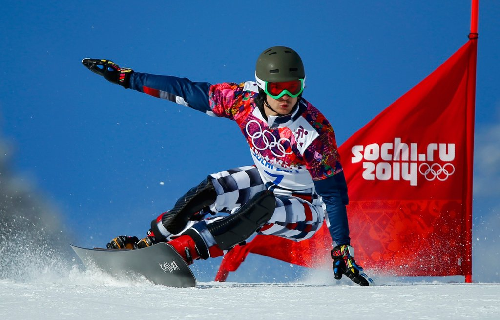

Сноуборд в России

Изобретение сноуборда относят к началу 1960-х годов. Шерман Поппен из города Маскигон[en], штат Мичиган, придумал и изготовил для своей дочери в 1965 году современное подобие сноуборда, названное снёрфером (snurfer — слово, составленное из двух других — snow («снег») и surf — «сёрф»).
Снёрфер не имел креплений, и чтобы удержаться на доске, катающийся должен был держаться за верёвку, привязанную к носу. Инструкция по пользованию также рекомендовала использовать для катания нескользящую обувь.
На протяжении последующих лет росла популярность этого вида спорта. Большой вклад в совершенствование снаряжения внесли такие люди, как Димитрий Милович, Джейк Бёртон (основатель компании Burton Snowboards), Том Симс (основатель компании Sims Snowboards) и Майк Олсон (основатель компании Mervin Manufacturing). Сёрфер с восточного побережья США Димитрий Милович в 1972 году основал компанию Winterstick по выпуску сноубордов, которая уже через 3 года удостоилась упоминания в журнале Ньюсуик. Доски Winterstick наследовали конструкционные принципы от снёрфа и лыж
Лучшие российские сноубордисты на данный момент
- Никита Автанеев
- В номинациях «Открытие года»
- Евгения Гольдман
- В номинации «Райдер года среди девушек»
- Денис Леонтьев
- В номинациях «Народный герой» и «Райдер года»
- Tsey Camp
- В номинации «Лучший лагерь»
В основном они побеждали в следующих соревнованиях:
- Олимпийские игры
- Чемпионат мира
- Чемпионат Европы
- Чемпоинат России
В преддверии чемпионата мира по сноуборду, который впервые в истории примет Москва, «Большой спорт» оглянулся назад и составил свой рейтинг-лист величайших сноубордистов в истории суверенной России
|
Развиваемые физические качества
| Контрольные упражнения (тесты) | |
| Мужчины | Женщины | |
| Нормативы общей физической, специальной физической подготовки | ||
| Скорость | Бег 100 м (не более 13,5 с) | Бег 100 м (не более 14 с) |
| Прыжок в длину с места (не менее 235 см) | Прыжок в длину с места (не менее 215 см) | |
|
Скоростно-силовые
| Прыжок в высоту с места (не менее 55 см) | Прыжок в высоту с места (не менее 45 см) |
| Тройной прыжок в длину с места (не менее 7,5 м) | Тройной прыжок в длину с места (не менее 7 м) | |
| Сила | Подтягивания из виса на перекладине (не менее 15 раз) | Сгибание и разгибание рук в упоре лежа на полу (не менее 30 раз) |
| Силовая выносливость | Подъем туловища, лежа на спине (не менее 45 раз) |
Подъем туловища, лежа на спине (не менее 40 раз) |
| Координация | Челночный бег 3×10 м (не более 7,5 с) | Челночный бег 3×10 м (не более 8 с) |
| Гибкость | Наклон вперед из положения стоя на возвышении (не менее 8 см) | Наклон вперед из положения стоя на возвышении (не менее 10 см) |
| Иные спортивные нормативы | ||
| Техническое мастерство | Обязательная техническая программа | |